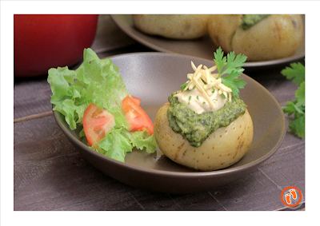

Vegetariana
Brócolis, milho e queijo
Preço e ficha técnicaA cadastrar
Sobre a imagem
Referência com creme de brócolis; composição diferente da ficha prevista.
Fonte: Yatna Yoga ↗PAINEL DA OPERAÇÃO
Composição e custos dos produtos cadastrados.

Brócolis, milho e queijo
Referência com creme de brócolis; composição diferente da ficha prevista.
Fonte: Yatna Yoga ↗Frango ao molho cremoso
Linguiça Blumenau e queijo
Foto da receita em vídeo; identificação da fonte preservada.
Fonte: Nossas Receitas · YouTube ↗Carne moída ao molho de tomate
Foto de referência de batata recheada à bolonhesa.
Fonte: Vokare / Folha de Notícias ↗